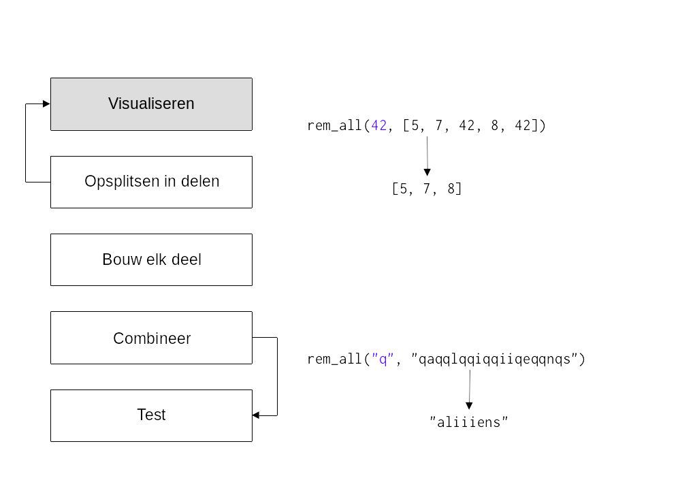
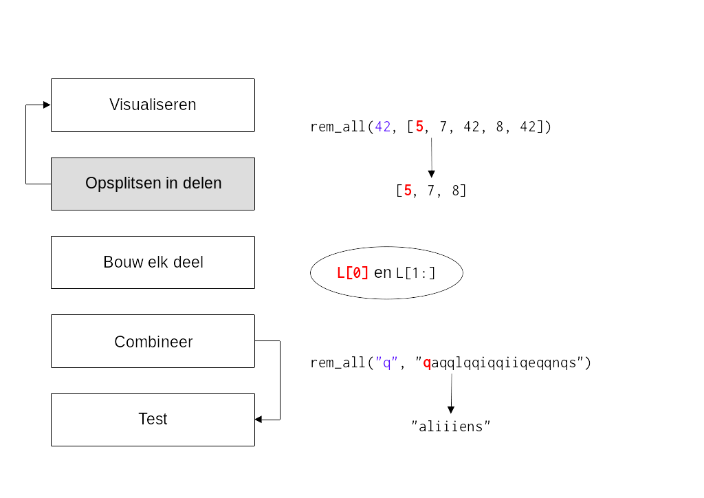
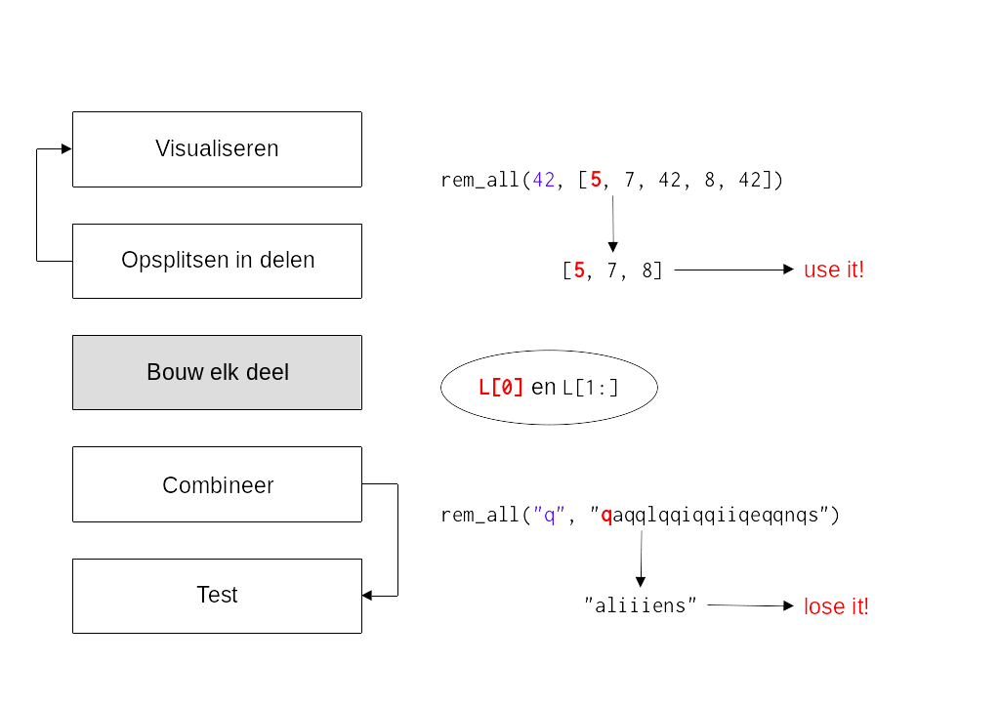

Ontwerp van algoritmen#
Ook voor mij blijft het een lastig onderwerp. Hoewel ik inmiddels al jaren recursie gebruik, nog steeds heb ik het vaak mis en moet ik weer terug naar de tekentafel om verder te zoeken naar de juiste zelfgelijkenis.
De uitdaging#
De zelfgelijkenis van een probleem kunnen aanwijzen

Laten we het een “uitdaging” noemen maar het is bekend dat recursie voor hoofdpijn en slapeloze nachten kan zorgen!
Het doel#
Het ontwerpen en implementeren van algoritmen voor het oplossen van problemen
Denk terug aan het begin waar we probeerden duidelijk te maken wat informatica nu precies is? Programmeren is uiteindelijk maar een klein onderdeel van informatica, de nadruk ligt op het bedenken van recepten om van een bepaalde input tot een gewenste input te komen. Hier zijn oplossingsstrategiën voor nodig en recursie is daar één van, later zullen we andere benaderingen gaan ontdekken (die misschien ook voor minder hoofdpijn gaan zorgen).
Ontwerpen van wat?#
Code (syntax)
Algoritmen! (ideeën)
Algoritmen#
def rem_all(e, L):
"""Returns sequence L with all e's rmovd
...
Top down#

Visualiseren#

Opdelen#

Bouwen#

Combineren#

Testen#

Combineren en testen#
def letter_score(c):
"""Scrabble letterscore
"""
...
def scrabble_score(s):
"""Scrabble wordscore
"""
LC = [letter_score(c) for c in s]
return sum(LC)
assert letter_score("q") == 10
assert scrabble_score("quiz") == 21
Use it or lose it!#
def rem_all(e, L):
"""Returns sequence L with all e's rmovd
"""
if len(L) == 0:
return L
elif L[0] != e:
return L[0:1] + rem_all(e, L[1:]) # use it!
else:
return rem_all(e, L[1:]) # lose it!
Bijvoorbeeld
assert rem_all(42, [5, 7, 42, 8, 42]) == [5, 7, 8]
assert rem_all("q", "qaqqlqqiqqiiqeqqnqs") == "aliiiens"

Een bekend patroon#
def max(L):
"""Find max value in L
"""
if len(L) < 2:
return L[0]
max_of_rest = max(L[1:])
if L[0] > max_of_rest:
return L[0] # use it!
else:
return max_of_rest # lose it!
We hopen dat je het use it or lose it! patroon inmiddels herkent? Denk bijvoorbeeld aan de recursieve implementatie van de ingebouwde functie max, een oude bekende! Denk ook terug aan andere voorbeelden of opgaven waar steeds een vergelijkbare keus werd gemaakt.
Quiz#
Van rem_all naar rem_one#
Verwijder e één keer uit L
def rem_one(e, L):
"""Returns sequence L with one e rmoved
"""
if len(L) == 0:
return L
elif L[0] != e:
return L[0:1] + rem_one(e, L[1:])
else:
return rem_one(e, L[1:])
Bijvoorbeeld
assert rem_one(8, [7, 8, 9, 8]) == [7, 9, 8]
assert rem_one("d", "coded") == "coed"
Deze rem_one werkt nog als rem_all. Eén onderdeel moet worden aangepast, welke is het?
Oplossing#
def rem_one(e, L):
"""Returns sequence L with one e rmoved
"""
if len(L) == 0:
return L
elif L[0] != e:
return L[0:1] + rem_one(e, L[1:])
else:
return L[1:]
Als L[0] niet gelijk is aan e, gebruik het dan. Maar als sprake is van een lose it situatie dan zal dit maar één keer moeten gebeuren. Een herhaling (recursie) is in dit geval dus niet nodig en het volstaat om de rest van L direct terug te geven.
Van rem_one naar rem_up_to#
Verwijder alles uit L tot en met de eerste e
def rem_up_to(e, L):
"""Returns sequence L up to the first e moved
"""
if len(L) == 0:
return L
elif L[0] != e:
return L[0:1] + rem_up_to(e, L[1:])
else:
return L[1:]
Bijvoorbeeld
assert rem_up_to(8, [7, 8, 9, 8]) == [9, 8]
assert rem_up_to("d", "coded") == "ed")
Deze rem_up_to werkt nog als rem_one. Eén onderdeel moet worden aangepast, welke is het?
Oplossing#
def rem_up_to(e, L):
"""Returns sequence L up to the first e moved
"""
if len(L) == 0:
return L
elif L[0] != e:
return rem_up_to(e, L[1:])
else:
return L[1:]
In dit geval hebben we geen nut meer voor een use it geval L[0], want alles tot een met (de use it’s moeten juist worden verwijderd). Misschien is het in dit geval toepasselijker te spreken over forget it!
LCS#
Het string-matching probleem in biologie:
‘HUMAN’
‘CHIMPANZEE’
Wat is de langst gemeenschappelijke opeenvolging van karakters?
In biologie is dit een werkelijk probleem waar het gaat om het vergelijken van DNA-sequenties.
Fylogenie#
De studie van relaties tussen verschillende groepen organismen en hun evolutionaire ontwikkeling.

Op basis van genetische overeenkomsten (gemeenschappelijke DNA subsequenties) kan worden bepaald hoe dicht bij of ver weg organismen evolutionair van elkaar staan.

Hoe kunnen de best gemeenschappelijke subsequenties worden gevonden binnen deze genomen? Dit is een algoritmisch probleem waar het lose it or use it principe kan worden toegepast.
Subsequenties#
Use it or lose it!
subseq("alg", "magical") == False
subseq('alg','twasbrillig') == True

Wat is een klein (eerste) stukje van het probleem?
Hoe zouden we het omschrijven in termen van de inputs?
Wat blijft er over na de behandeling van dit stuk?
Zijn er nog andere functies die we nodig hebben?
Dit zijn de vragen die je jezelf zal moeten stellen wanneer je een probleen gaat opsplitsen in kleinere delen. Bijvoorbeeld in dit geval, als s[0] overeenkomt met sbig[0], wat blijft er over na een eerse behandeling?
Base case#
def subseq(s, sbig):
"""Returns True if s is a subsequence of sbig;
False otherwise. Both are strings.
"""
if s == "":
return True
elif s[0] not in sbig: # niet meer aanwezig, stoppen
return False
Wat zou je hier identificeren als de “it” in use it or lose it? s[0] is het eerste geval dat overeen moet komen met een opeenvolgend karakter in sbig, laat dit de it zijn!
Recursieve stappen#
Combineren met use it or lose it!
Indien it niet gelijk
s[0] != sbig[0]
use it en herhaal voor de rest
subseq(s[0:], sbig[1:])
Indien it wel gelijk
s[0] == sbig[0]
lose it en herhaal voor de rest
subseq(s[1:], sbig[1:])
De handelingen#
Is “ctg” een subsequentie van “tacggta”?
subseq("ctg", "tacggta")use it!subseq("ctg", "acggta")use it!subseq("ctg", "cggta")use it!subseq("tg", "ggta")lose it!subseq("tg", "gta")use it!subseq("tg", "ta")use it!subseq("g", "a")lose it!Base case
s[0] not in sbig=>False
“ctg” is geen subsequentie van “tacggta”
Volledig#
def subseq(s, sbig):
"""Returns True if s is a subsequence of sbig;
False otherwise. Both are strings.
"""
if s == "":
return True
elif s[0] not in sbig: # niet aanwezig, stoppen
return False
# recursieve stappen
elif s[0] != sbig[0]:
return subseq(s[0:], sbig[1:]) # use it!
else:
return subseq(s[1:], sbig[1:]) # lose it!